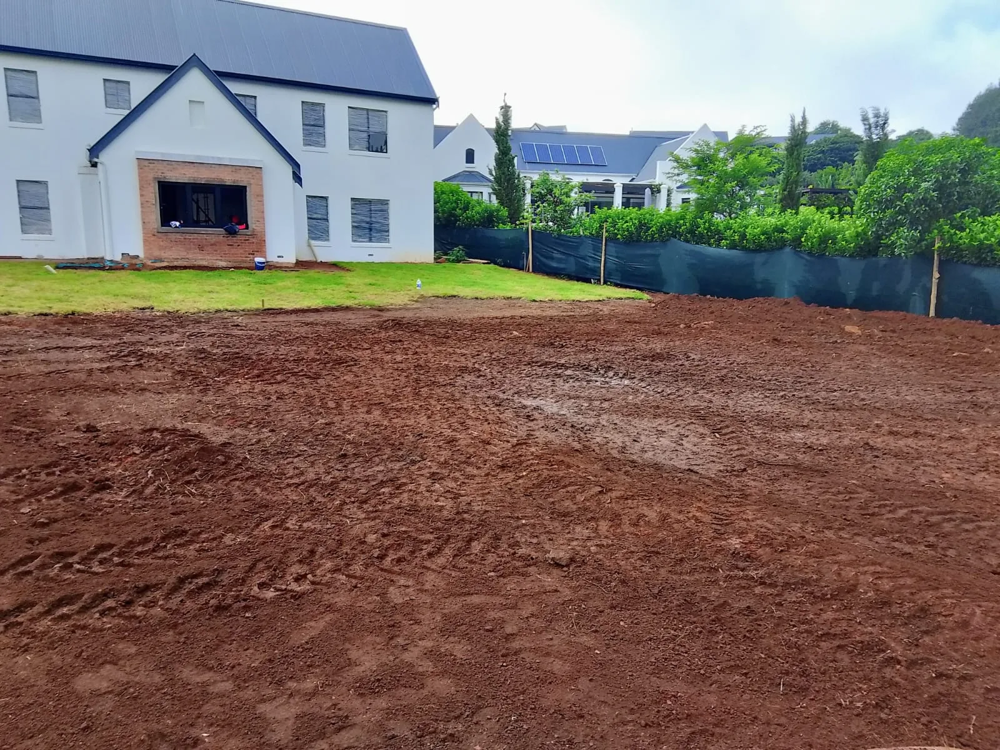

Natural instant turf
Enjoy the look and feel of real grass without waiting for seed to grow. Instant turf is a practical choice for home gardens, new builds, estates, schools and business grounds.
Natural grass · Instant coverageFrom soil to green
Quality natural turf, careful preparation and practical guidance — brought together for a lawn that looks good from day one.

What we do
Whether you are starting from bare soil or replacing an old lawn, we can help you take the next step.
Enjoy the look and feel of real grass without waiting for seed to grow. Instant turf is a practical choice for home gardens, new builds, estates, schools and business grounds.
Natural grass · Instant coverageA level, clear base gives turf its best start. Preparation includes removing old growth and stones, shaping the ground and raking the soil to a suitable finish.
Clearing · Levelling · Soil preparationTurf is laid closely in a staggered pattern, trimmed around paths and edges, then pressed down for good contact with the soil below.
Tight joins · Clean edges · Careful fittingOrder through our Pietermaritzburg or Durban branch. Contact us with your location and quantity so we can confirm supply and discuss delivery options for your area.
PMB & DBN · Ask about your areaNew turf needs consistent care while it establishes. We share straightforward advice on watering and looking after your lawn during those important first weeks.
Watering · Settling · Lawn careQuick lawn calculator
Measure the length and width of a rectangular space. For curves or separate areas, send us your details and we can help.
How it works
Send your location, measurements and a photo if available.
We discuss your turf needs, preparation and available options.
The ground is prepared and your instant lawn is neatly fitted.
Follow the watering and aftercare guidance as the lawn settles.
Good to know
Instant turf provides immediate coverage and an established look as soon as it is laid. Seed takes longer to grow and needs a longer establishment period before the area looks like a full lawn.
Divide the space into smaller rectangles, calculate each one, then add the areas together. For curved edges or complicated shapes, send a photo and your approximate measurements so we can help you plan.
A small allowance helps with trimming, shaping and odd-shaped edges. Our calculator suggests 5% extra as a starting point, but the right allowance depends on your garden layout.
Water new turf thoroughly as soon as it is laid. Keep it consistently moist while the roots establish, and follow the specific aftercare guidance provided for your lawn and conditions.
GRASS EN ALL has branches in Pietermaritzburg and Durban and serves customers across KZN. Contact us with your location and quantity to confirm delivery availability.
Let’s get growing
Call, WhatsApp or send your measurements for help with your instant lawn.